Οργάνωση & Εξατομίκευση — Projects, Memory & Styles
Η πραγματική παραγωγικότητα με την Τεχνητή Νοημοσύνη απαιτεί μια σημαντική αλλαγή. Το μοντέλο πρέπει να σταματήσει να λειτουργεί ως ένας γενικός, ανώνυμος βοηθός. Αντίθετα, οφείλει να μετατραπεί σε έναν απόλυτα εξειδικευμένο συνεργάτη, ο οποίος γνωρίζει σε βάθος τις ανάγκες σας. Ο στόχος αυτής της ενότητας είναι να σας καθοδηγήσει βήμα προς βήμα στη δημιουργία ενός προσωπικού, μόνιμου περιβάλλοντος εργασίας μέσα στο Claude. Μέσω των προηγμένων λειτουργιών των Projects, της Μνήμης (Memory) και των Στυλ Γραφής (Custom Styles), θα μάθετε πώς να «εκπαιδεύετε» το μοντέλο. Με αυτόν τον τρόπο, το Claude θα διατηρεί σταθερό το εταιρικό ή ακαδημαϊκό σας ύφος. Παράλληλα, θα ανατρέχει αυτόματα σε συγκεκριμένα αρχεία-κλειδιά και θα ευθυγραμμίζεται με τους στρατηγικούς σας στόχους. Έτσι, δεν θα χρειάζεται να επαναλαμβάνετε τις ίδιες οδηγίες σε κάθε νέα συνομιλία.
Με την ολοκλήρωση της ενότητας, θα είστε σε θέση να εξοικονομείτε πολύτιμο χρόνο, εξαλείφοντας τη χρονοβόρα διαδικασία της συνεχιζόμενης εισαγωγής πλαισίου (context) και των επαναλαμβανόμενων prompts. Θα μπορείτε να οργανώνετε διαφορετικά έργα σε αυτοτελείς ψηφιακούς χώρους. Παράλληλα, θα είστε σε θέση να διαχειρίζεστε τη μνήμη του συστήματος για τη διατήρηση κρίσιμων πληροφοριών. Τέλος, θα εναλλάσσετε με ευκολία το ύφος επικοινωνίας ανάλογα με το κοινό-στόχο σας. Το αποτέλεσμα θα είναι η λήψη απαντήσεων με ασύγκριτα μεγαλύτερη ακρίβεια, συνέπεια και επιχειρηματική αξία, προσαρμοσμένων αποκλειστικά στα δικά σας επαγγελματικά πρότυπα.
Projects — τι είναι και πότε αξίζει να φτιάξεις ένα
Όταν εργάζεστε στο Claude, η πιο συνηθισμένη ροή εργασίας είναι η έναρξη μιας απλής συνομιλίας (chat). Ωστόσο, για σύνθετα έργα ή επαναλαμβανόμενες εργασίες, η πλατφόρμα προσφέρει μια πολύ πιο ισχυρή δομή: τα «Projects».
Ο στόχος αυτής της υποενότητας είναι να κατανοήσετε σε βάθος τη διαφορά ανάμεσα σε μια απλή συνομιλία και σε ένα Project. Παράλληλα, θα είστε σε θέση να κρίνετε με σαφήνεια πότε απαιτείται η δημιουργία ενός Project για τη βέλτιστη οργάνωση της εργασίας σας, αποφεύγοντας τη χρονοβόρα διαδικασία της συνεχιζόμενης εισαγωγής δεδομένων.
Βίντεο μαθήματος: Claude Projects
Claude Projects
Το βίντεο παρουσιάζει τη λειτουργία των Projects στο Claude: τι είναι ο αυτόνομος χώρος εργασίας, πώς οργανώνεται ο πίνακας ελέγχου και γιατί τα Projects αλλάζουν ριζικά τον τρόπο που δουλεύετε με το μοντέλο.
Τι να προσέξετε: τη διαφορά «εφήμερου» και «μόνιμου» πλαισίου (context), τον ρόλο της Βάσης Γνώσης (Project Knowledge) και των Οδηγιών (Instructions), καθώς και τα κριτήρια για το πότε αξίζει να δημιουργήσετε ένα Project.
Ελέγξτε τι κατανοήσατε
Τι είναι ένα Project στο Claude;
Τι είναι το Project
Ένα Project είναι ένας αυτόνομος, κλειστός χώρος εργασίας (workspace) μέσα στο Claude. Διαθέτει το δικό του, ξεχωριστό ιστορικό συνομιλιών και τη δική του, ιδιωτική «βάση γνώσης». Μέσα σε κάθε Project μπορείτε να ανεβάσετε έγγραφα, να δώσετε συγκεκριμένο πλαίσιο και να πραγματοποιήσετε απόλυτα εστιασμένες συνομιλίες με το μοντέλο.
Για να αντιληφθούμε τη διαφορά, αρκεί να σκεφτούμε πώς οργανώνουμε την εργασία μας στο φυσικό μας περιβάλλον — η αναλογία του φυσικού γραφείου:
Η «Απλή» Συνομιλία (Chat)
Είναι σαν να μιλάτε με έναν νέο συνεργάτη πάνω από μια λευκή κόλλα χαρτί. Του εξηγείτε τα πάντα από την αρχή, αλλά μόλις αλλάξετε δωμάτιο (ανοίξετε νέο chat), πρέπει να του ξαναπείτε ποιος είναι, τι θέλετε και να του ξαναδείξετε τα ίδια έγγραφα.
Το Project
Είναι σαν να έχετε στήσει ένα ολόκληρο, αποκλειστικό γραφείο γι' αυτόν τον συνεργάτη. Ο φάκελος με τα έγγραφα είναι ήδη αρχειοθετημένος στο συρτάρι, οι οδηγίες εργασίας είναι κολλημένες στον τοίχο, και όποια νέα συζήτηση κι αν ανοίξετε εκεί μέσα, το πλαίσιο είναι ήδη ενεργό και δεδομένο.
Η επιλογή των Projects στο περιβάλλον του Claude
Όταν συνδέεστε στον λογαριασμό σας, στο αριστερό κάθετο μενού πλοήγησης (Sidebar), κάτω ακριβώς από την επιλογή των απλών συνομιλιών (Chats), θα συναντήσετε την επιλογή Projects με το χαρακτηριστικό εικονίδιο του χαρτοφύλακα.
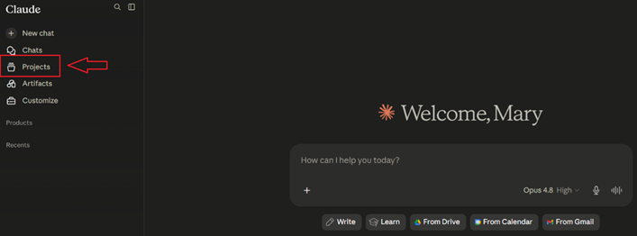
Ο κεντρικός πίνακας ελέγχου (Dashboard)
Κάνοντας κλικ στην επιλογή Projects, μεταφέρεστε στον κεντρικό πίνακα ελέγχου (Dashboard) των έργων. Το περιβάλλον αυτό είναι σχεδιασμένο με γνώμονα την καθαρότητα και την εύκολη οργάνωση, περιλαμβάνοντας τα εξής βασικά στοιχεία:
Κουμπί «New project»
Βρίσκεται στο πάνω δεξί μέρος της οθόνης και αποτελεί την αφετηρία για τη δημιουργία ενός νέου ψηφιακού χώρου εργασίας.
Μπάρα Αναζήτησης («Search projects...»)
Σας επιτρέπει να αναζητήσετε γρήγορα ένα συγκεκριμένο έργο πληκτρολογώντας τον τίτλο του, λειτουργία ιδιαίτερα χρήσιμη όταν διαχειρίζεστε πολλά Projects ταυτόχρονα.
Φίλτρο Ταξινόμησης («Sort by»)
Σας δίνει τη δυνατότητα να ταξινομήσετε τα έργα σας με βάση την πρόσφατη δραστηριότητα (Activity) ή αλφαβητικά.
Κάρτες Έργων (Project Cards)
Κάθε Project εμφανίζεται ως μια αυτόνομη τετράγωνη κάρτα. Στην κάρτα αναγράφεται ο τίτλος του έργου, μια σύντομη περιγραφή του σκοπού του, καθώς και η χρονική σήμανση της τελευταίας ενημέρωσης (π.χ. Updated 2 weeks ago), ώστε να γνωρίζετε πότε εργαστήκατε τελευταία φορά σε αυτό.
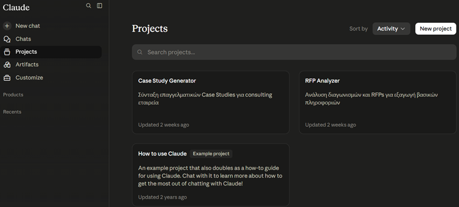
Η Ουσιαστική Διαφορά: Εφήμερο έναντι Μόνιμου πλαισίου
Η πραγματική διαφορά ανάμεσα στις δύο λειτουργίες δεν αφορά το μέγεθος της εργασίας («μικρό vs μεγάλο»), αλλά τη διάρκεια του πλαισίου (context).
Στην απλή συνομιλία, το πλαίσιο είναι εφήμερο. Ζει και πεθαίνει μέσα σε εκείνο το ένα και μοναδικό νήμα συζήτησης. Μόλις κλείσετε τη συνομιλία και ανοίξετε μια καινούρια, το Claude δεν θυμάται απολύτως τίποτα. Πρέπει να ξανα-ανεβάσετε τα ίδια αρχεία, να ξανα-εξηγήσετε τον ρόλο του και να ξαναζητήσετε το ύφος που επιθυμείτε.
Στο Project, το πλαίσιο γίνεται μόνιμο. Παραμένει κοινό και προσβάσιμο για όλες τις επιμέρους συνομιλίες που θα ανοίξετε εντός του, αξιοποιώντας δύο βασικά εργαλεία: 1) την «Βάση Γνώσης» (Project Knowledge) και 2) τις οδηγίες του Project (Instructions).
Βάση Γνώσης (Project Knowledge)
Ανεβάζετε τα σχετικά έγγραφα, πρότυπα, κείμενα ή βάσεις δεδομένων μία φορά. Το Claude τα διατηρεί στη μνήμη του και ανατρέχει σε αυτά σε κάθε νέο chat του ίδιου Project.
Οδηγίες Project (Project Instructions)
Ορίζετε εκ των προτέρων γενικές οδηγίες (Custom Instructions) για τη συμπεριφορά του μοντέλου, για παράδειγμα, να απαντά πάντα με συγκεκριμένο επίσημο ύφος ή από την οπτική ενός εξειδικευμένου ρόλου.
Επομένως, σε μια απλή συνομιλία στήνετε το πλαίσιο κάθε φορά, ενώ σε ένα Project το στήνετε μία φορά και το ξαναχρησιμοποιείτε μόνιμα.
Chat και Project με μια ματιά
| Χαρακτηριστικό | Απλή Συνομιλία (Chat) | Project |
|---|---|---|
| Διάρκεια Μνήμης | Περιορίζεται στα όρια της συγκεκριμένης συζήτησης. | Μόνιμη για όλο το υλικό που περιλαμβάνεται στον φάκελο. |
| Διαχείριση Αρχείων | Τα αρχεία χάνονται μόλις ανοίξετε νέο chat. | Τα αρχεία αποθηκεύονται κεντρικά και είναι διαθέσιμα σε κάθε νέο chat. |
| Καθορισμός Οδηγιών | Απαιτείται επανάληψη του ύφους και του ρόλου σε κάθε prompt. | Ορίζετε μία φορά τις «Project Instructions» για όλες τις συζητήσεις. |
Πότε αξίζει να δημιουργήσετε ένα Project;
Η δημιουργία ενός Project απαιτεί ελάχιστο χρόνο προετοιμασίας, αλλά σας γλιτώνει από ώρες επαναλαμβανόμενης εργασίας. Μπορείτε να αποφασίζετε πότε να το χρησιμοποιείτε θέτοντας στον εαυτό σας τρεις ερωτήσεις-φίλτρα. Αν η απάντηση σε τουλάχιστον δύο από αυτές είναι «ναι», τότε η δημιουργία Project είναι η βέλτιστη επιλογή:
Πότε ΔΕΝ χρειάζεται να το χρησιμοποιήσετε;
Για να μην υπερφορτώνετε το περιβάλλον εργασίας σας, αποφύγετε τα Projects όταν πρόκειται για παράδειγμα για:
- Μια μεμονωμένη, γρήγορη ερώτηση (π.χ. «μετάφρασέ μου αυτή την παράγραφο»).
- Μια εργασία χωρίς υποστηρικτικό υλικό που θα ξαναχρειαστεί στο μέλλον.
- Διερευνητικές, άσχετες μεταξύ τους ερωτήσεις (εκεί η απλή συνομιλία είναι πιο γρήγορη και καθαρή).
Εφαρμόστε το σε σενάριο
Συντάσσετε κάθε εβδομάδα αναφορές για τον ίδιο πελάτη, βασισμένες στα ίδια έγγραφα προδιαγραφών, και θέλετε πάντα την ίδια δομή παραδοτέου. Τι σας συμφέρει;
Δημιουργία Project με instructions και knowledge base
Αφού κατανοήσαμε τη θεωρητική υπεροχή των Projects, ήρθε η ώρα να περάσουμε στην πράξη. Ο στόχος αυτής της υποενότητας είναι να μπορείτε να δημιουργείτε ένα Project από το μηδέν, να τροφοδοτείτε τη Βάση Γνώσης (Knowledge Base) με τα κατάλληλα αρχεία αναφοράς και να συντάσσετε αποτελεσματικές Προσαρμοσμένες Οδηγίες (Custom Instructions), ορίζοντας με ακρίβεια τη συμπεριφορά του Claude.
Βήμα 1: Αρχική Δημιουργία του Project
- Επιλέγετε το κουμπί «New Project»
- Δίνετε ταυτότητα στο Project Στο παράθυρο διαλόγου που εμφανίζεται, θα πρέπει να συμπληρώσετε δύο βασικά πεδία για να δώσετε ταυτότητα στο νέο σας Project: 1) What are you working on? (Name your project): Εδώ πληκτρολογείτε τον τίτλο του έργου σας. 2) What are you trying to achieve? (Description): Στο πεδίο αυτό εισάγετε μια σύντομη περιγραφή του σκοπού και των στόχων του Project, ώστε να δώσετε ένα αρχικό γενικό πλαίσιο στο μοντέλο.
- Κάντε κλικ στο κουμπί «Create Project» Πλέον, έχετε δημιουργήσει τον δικό σας αυτόνομο ψηφιακό χώρο εργασίας.
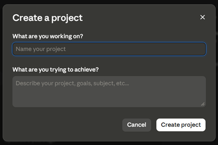
Βήμα 2: Εμπλουτισμός της Βάσης Γνώσης (Knowledge Base)
Μόλις δημιουργηθεί το Project, μεταφέρεστε αυτόματα στο εσωτερικό του περιβάλλον. Στη δεξιά πλευρά της οθόνης σας βρίσκεται το κεντρικό πάνελ ρυθμίσεων και διαχείρισης του έργου. Η εισαγωγή του υλικού αναφοράς γίνεται μέσω της τρίτης κατά σειρά ενότητας, η οποία ονομάζεται Files.
Τι κάνετε: Για να προσθέσετε περιεχόμενο, μπορείτε είτε να κάνετε κλικ στο εικονίδιο της προσθήκης «+» που βρίσκεται στα δεξιά του τίτλου Files, είτε να σύρετε (drag and drop) τα αρχεία σας απευθείας μέσα στο πλαίσιο που αναγράφει «Add PDFs, documents, or other text to reference in this project».
Τι μπορείτε να ανεβάσετε: Αναφορές σε PDF, υπολογιστικά φύλλα Excel, ή ακόμη και αρχεία κώδικα. Αυτά τα αρχεία αποτελούν πλέον τα μόνιμα δεδομένα στα οποία θα βασίζεται το Claude για να σας απαντά.
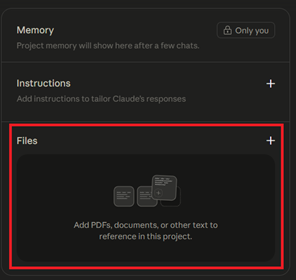
Μόλις μεταφορτωθούν, τα αρχεία αυτά αποθηκεύονται μόνιμα στο συγκεκριμένο Project και αποτελούν τη σταθερή βάση γνώσης πάνω στην οποία θα βασίζεται το Claude για να απαντά σε κάθε νέα συνομιλία που ανοίγετε.
Βήμα 3: Προσθήκη Οδηγιών Project (Project Instructions)
Στο ίδιο δεξί μενού, κάτω από τη βάση γνώσης, θα βρείτε την επιλογή Set Instructions. Εδώ βρίσκεται η «καρδιά» της εξατομίκευσης. Οι οδηγίες που θα πληκτρολογήσετε σε αυτό το πεδίο θα εφαρμόζονται αυτόματα σε κάθε νέο chat που ανοίγετε μέσα στο συγκεκριμένο Project. Οι οδηγίες του Project σάς επιτρέπουν να «κλειδώσετε» μόνιμα τη συμπεριφορά, τον ρόλο και το ύφος του Claude για οποιαδήποτε συζήτηση πραγματοποιηθεί μέσα σε αυτόν τον χώρο εργασίας.
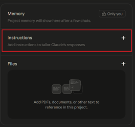
Πατώντας πάνω στο «+» που βρίσκεται δίπλα στο Instruction, οδηγείστε στην επόμενη εικόνα, ώστε να γράψετε τις οδηγίες για το Project.
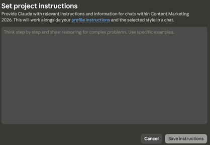
Βάλτε τα βήματα στη σειρά
Τοποθετήστε τα βήματα δημιουργίας ενός πλήρους Project στη σωστή σειρά (κάντε κλικ στα βήματα με τη σειρά που εκτελούνται):
Γιατί είναι τόσο σημαντικές οι Οδηγίες Project;
1. Μόνιμος Ρόλος (Persona)
Ορίζετε μία φορά την ιδιότητα του Claude (π.χ. «Θέλω να λειτουργείς ως έμπειρος Social Media Manager» ή «ως Νομικός Σύμβουλος»). Το μοντέλο δεν θα βγει ποτέ από αυτόν τον ρόλο, όσα νέα chat κι αν ανοίξετε.
2. Σταθερό Ύφος και Μορφοποίηση
Μπορείτε να του επιβάλετε συγκεκριμένους κανόνες εμφάνισης των αποτελεσμάτων. Για παράδειγμα, να χρησιμοποιεί πάντα επίσημο ύφος, να αποφεύγει τα μακροσκελή κείμενα, να απαντά με bullet points ή να ενσωματώνει συγκεκριμένα hashtags και emojis αν πρόκειται για υλικό marketing.
3. Αυτόματη Διασύνδεση με τα Αρχεία σας
Μέσα στις οδηγίες μπορείτε να του δώσετε την εντολή να ανατρέχει πάντα στα έγγραφα που έχετε ανεβάσει στην ενότητα Files, να διασταυρώνει τις πληροφορίες μαζί τους και να αναφέρει ακόμη και τις σελίδες των πηγών για λόγους τεκμηρίωσης.
Το Μεγάλο Όφελος: Οι οδηγίες λειτουργούν ως ένα μόνιμο «αόρατο prompt» που εκτελείται στο υπόβαθρο κάθε συνομιλίας. Έτσι, εσείς γράφετε πλέον ελάχιστες λέξεις στο chat (π.χ. «Φτιάξε το post της εβδομάδας») και το Claude αναλαμβάνει να το υλοποιήσει ακολουθώντας πιστά όλους τους σύνθετους κανόνες που έχετε ορίσει στις Instructions.
Παραδείγματα Projects για διαφορετικά profiles
Η δύναμη των Projects κρύβεται στην ευελιξία τους να μεταμορφώνονται ανάλογα με τον επαγγελματικό ή ακαδημαϊκό ρόλο του χρήστη. Ο στόχος αυτής της υποενότητας είναι να σας προσφέρει έτοιμα, δοκιμασμένα πρότυπα (blueprints) για διαφορετικά προφίλ, τα οποία μπορείτε να αντιγράψετε και να προσαρμόσετε άμεσα στις δικές σας ανάγκες.
Το Προφίλ του Διαχειριστή Μέσων Κοινωνικής Δικτύωσης (Social Media Manager)
Για έναν Social Media Manager, η καθημερινή πρόκληση δεν είναι απλώς η συγγραφή κειμένων, αλλά η διατήρηση μιας σταθερής και αναγνωρίσιμης εταιρικής ταυτότητας (Brand Voice) για διαφορετικά brands ή καμπάνιες. Η δημιουργία ενός εξειδικευμένου Project στο Claude σάς επιτρέπει να «κλειδώσετε» το ύφος μιας εταιρείας, μετατρέποντας το μοντέλο σε έναν μόνιμο Content Creator που γνωρίζει το κοινό σας όσο εσείς.
1. Τι θα ανεβάσετε στην ενότητα «Files» (Βάση Γνώσης)
Για να αποκτήσει το Claude πλήρη γνώση του brand και της στρατηγικής σας, μεταφορτώνετε τα αρχεία σας, όπως για παράδειγμα:
- Ένα έγγραφο με τις κατευθυντήριες γραμμές της εταιρείας (απαγορευμένες λέξεις, επιθυμητή ορολογία, φιλοσοφία).
- Αναλυτικές περιγραφές των ιδανικών πελατών στους οποίους απευθύνεστε (δημογραφικά στοιχεία, ενδιαφέροντα, ανάγκες).
- Το πλάνο με τη θεματολογία της χρονιάς ή της τρέχουσας καμπάνιας.
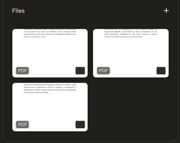
2. Τι θα γράψετε στην ενότητα «Instructions» (Οδηγίες Project)
«Θέλω να λειτουργείς ως Creative Social Media Manager και Copywriter υψηλού επιπέδου. Σε αυτό το Project, θα δημιουργούμε περιεχόμενο για τα κανάλια επικοινωνίας μας, βασιζόμενοι αυστηρά στο Brand Style Guide και στις Buyer Personas που βρίσκονται στα Files.
Κανόνες Συμπεριφοράς και Ύφους:
1. Ύφος και Τόνος: Η φωνή του brand μας είναι σύγχρονη, ενθαρρυντική, γεμάτη ενέργεια και απόλυτα φιλική. Χρησιμοποίησε άμεσο λόγο που χτίζει κοινότητα (ενικό ή πληθυντικό ανάλογα με το μέσο), αποφεύγοντας το στεγνό ή υπερβολικά τυπικό εταιρικό ύφος.
Το prompt των οδηγιών — συνέχεια
2. Προσαρμογή ανά Κανάλι:
- LinkedIn: Επαγγελματικό, industry-focused ύφος, δομημένο με σύντομες παραγράφους (hook-driven) και έμφαση σε business insights.
- Instagram/Facebook: Πιο χαλαρό ύφος, χρήση emojis για οπτικό διαχωρισμό του κειμένου και έντονο Call to Action (CTA).
3. Δομή Δημοσίευσης: Κάθε post πρέπει να περιλαμβάνει: α) Ένα δυνατό "Hook" (πιασάρικη πρώτη γραμμή), β) Το κυρίως σώμα σε ευανάγνωστη μορφή και γ) Ένα ξεκάθαρο Call to Action (CTA) που προτρέπει σε σχόλιο ή κλικ, ακολουθούμενο από τα σταθερά hashtags της εταιρείας.
Αποθήκευσε αυτούς τους κανόνες και εφάρμοσέ τους σε κάθε νέο chat.»
Οι οδηγίες μέσα στο περιβάλλον του Claude
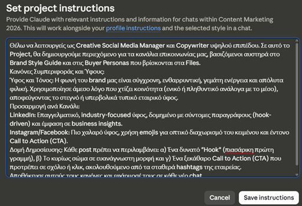
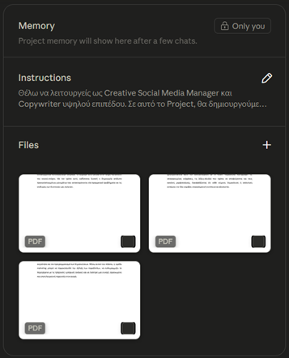
3. Πώς το χρησιμοποιείτε στην πράξη
Αφού αποθηκεύσετε τις οδηγίες, η καθημερινή παραγωγή περιεχομένου απλοποιείται στο μέγιστο. Ανοίγετε ένα νέο chat μέσα στο Project και πληκτρολογείτε:
«Με βάση τη «Persona» που έχουμε στα αρχεία μας, γράψε ένα post για το Instagram που θα ανακοινώνει την έναρξη του καλοκαιρινού μας διαγωνισμού.»
Το Claude θα ανατρέξει αμέσως στα Files για να θυμηθεί τα χαρακτηριστικά της Persona, θα εφαρμόσει το ενεργητικό ύφος, θα δημιουργήσει το Hook, θα προσθέσει τα κατάλληλα emojis και θα κλείσει με το σωστό CTA και τα hashtags, χωρίς να χρειαστεί να του επαναλάβετε κανέναν κανόνα.
Το Claude επί το έργον
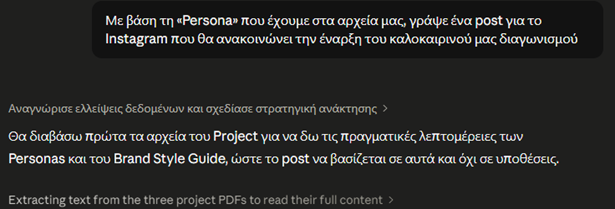
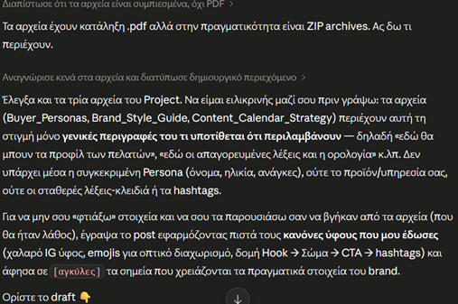
Το Προφίλ του Συμβούλου Επιχειρήσεων / Αναλυτή Έργων (Business Consultant / Project Analyst)
Για έναν σύμβουλο επιχειρήσεων ή αναλυτή, η καθημερινότητα περιλαμβάνει τη διαχείριση μεγάλου όγκου εταιρικών δεδομένων, οικονομικών αναφορών και προδιαγραφών έργων. Η δημιουργία ενός Project στο Claude λειτουργεί ως ένας μόνιμος, ιδιωτικός «Συνεργάτης Στρατηγικής» (Strategy Partner), ο οποίος γνωρίζει τις ιδιαιτερότητες του πελάτη ή του κλάδου και βοηθά στην ταχύτατη εξαγωγή συμπερασμάτων και τη σύνταξη παραδοτέων.
1. Τι θα ανεβάσετε στην ενότητα «Files» (Βάση Γνώσης)
Για να αποκτήσει το Claude το απαραίτητο επιχειρηματικό υπόβαθρο, μεταφορτώνετε:
- Οικονομικές Αναφορές & Data: Αρχεία Excel ή PDF με ισολογισμούς, τριμηνιαία αποτελέσματα ή δεδομένα πωλήσεων της υπό εξέταση εταιρείας.
- Κανονιστικό Πλαίσιο / Industry Reports: Μελέτες αγοράς για τον συγκεκριμένο κλάδο ή το νομικό/θεσμικό πλαίσιο που επηρεάζει το έργο.
- Πρότυπα Παραδοτέων (Templates): Ένα αρχείο Word που δείχνει τη δομή που πρέπει να έχει μια επίσημη επιχειρηματική πρόταση (Business Proposal) ή μια ανάλυση βιωσιμότητας.
2. Τι θα γράψετε στην ενότητα «Instructions» (Οδηγίες Project)
«Θέλω να λειτουργείς ως Ανώτατος Σύμβουλος Επιχειρήσεων (Management Consultant) και Οικονομικός Αναλυτής. Σε αυτό το Project, θα αναλύουμε δεδομένα και θα συντάσσουμε αναφορές βασιζόμενοι αυστηρά στα εταιρικά αρχεία και τις μελέτες που βρίσκονται στα Files.
Κανόνες Συμπεριφοράς και Ύφους:
Ύφος: Το ύφος σου πρέπει να είναι απόλυτα επαγγελματικό, εταιρικό, αντικειμενικό και αναλυτικό. Απόφευγε γενικόλογες εκφράσεις και εντυπωσιακά επίθετα (π.χ. "φανταστική απόδοση"). Κάθε ισχυρισμός σου πρέπει να υποστηρίζεται από τα δεδομένα των αρχείων.
Το prompt των οδηγιών — συνέχεια
Δομή Αναφορών: Όταν σου ζητώ τη σύνταξη business κειμένων, θα χρησιμοποιείς δομή Executive Summary: α) Κύριο Συμπέρασμα (Bottom Line Up Front), β) Ποσοτική Ανάλυση (με νούμερα και ποσοστά), γ) Εντοπισμός Ρίσκων/Προκλήσεων και δ) 3 Στρατηγικές Προτάσεις (Recommendations).
Διαχείριση Δεδομένων: Σε κάθε ανάλυση, υπολόγιζε και ανάφερε πάντα τις ποσοστιαίες μεταβολές (π.χ. αύξηση YoY) ή τους σχετικούς δείκτες (KPIs) που προκύπτουν από τα υπολογιστικά φύλλα των Files.
Αποθήκευσε αυτούς τους κανόνες και εφάρμοσέ τους σε κάθε νέο chat.»
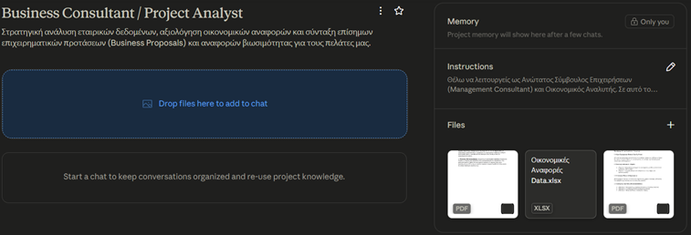
3. Πώς το χρησιμοποιείτε στην πράξη (Παράδειγμα Chat)
Ανοίγετε ένα νέο chat μέσα στο Project και πληκτρολογείτε μια σύντομη εντολή, χωρίς να χρειάζεται να επαναδιατυπώσετε το πλαίσιο:
«Με βάση τα οικονομικά δεδομένα του τελευταίου τριμήνου που έχουμε στα Files, κάνε μια σύντομη αναφορά για τη Γενική Διεύθυνση σχετικά με την πορεία των λειτουργικών εξόδων και πρότεινε 3 μέτρα περιορισμού του κόστους.»
Από τη «σκέψη» στο τελικό παραδοτέο
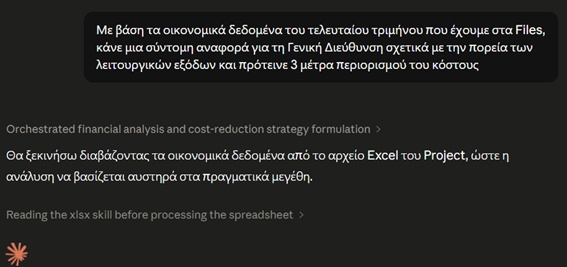
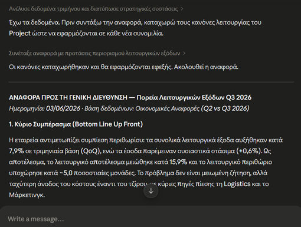
Αντιστοιχίστε τα στοιχεία με το προφίλ
Αντιστοιχίστε κάθε στοιχείο με το προφίλ Project στο οποίο ανήκει (επιλέξτε ένα στοιχείο από κάθε στήλη):
Memory — πώς θυμάται το Claude και πώς το ελέγχεις
Μέχρι τώρα εξετάσαμε πώς μπορούμε να εκπαιδεύσουμε το Claude στο περιβάλλον ενός Project, παρέχοντάς του σταθερά δεδομένα (μέσω των αρχείων Files) και απόλυτους, προκαθορισμένους κανόνες (μέσω των Instructions). Υπάρχει, ωστόσο, και ένα τρίτο, εξαιρετικά δυναμικό επίπεδο εξατομίκευσης που προσφέρει αποκλειστικά η επιλογή των Projects: η λειτουργία της Μνήμης (Memory).
Ο στόχος αυτής της υποενότητας είναι να κατανοήσετε πώς το μοντέλο μαθαίνει αυτόματα από τις συνομιλίες σας, πώς μπορείτε να ελέγχετε αυτή τη λειτουργία (ενεργοποίηση/απενεργοποίηση) και, κυρίως, πώς να αξιολογείτε, να επεξεργάζεστε και να διαγράφετε τις αναμνήσεις του ώστε να παραμένει απόλυτα αποδοτικό.
Η Φιλοσοφία της Μνήμης: Καθολική και Δυναμική Μάθηση
Η Μνήμη (Memory) λειτουργεί ως ένας μηχανισμός αυτόματης εξαγωγής γνώσης. Καθώς αλληλεπιδράτε με το Claude στις απλές, καθημερινές σας συνομιλίες (Chats) και κάνετε διορθώσεις στον τρόπο που σας απαντά (π.χ., «Μην χρησιμοποιείς τόσο μεγάλες προτάσεις» ή «Προτιμώ τα δεδομένα αποκλειστικά σε μορφή πίνακα»), το σύστημα εντοπίζει αυτές τις πάγιες προτιμήσεις και τις αποθηκεύει αυτόματα.
Με αυτόν τον τρόπο, το μοντέλο «θυμάται» τις υποδείξεις σας και τις εφαρμόζει σε όλες τις μελλοντικές, ανεξάρτητες συνομιλίες σας, δημιουργώντας ένα μόνιμο, εξατομικευμένο προφίλ απαντήσεων που σας ακολουθεί παντού, χωρίς να περιορίζεται στα στενά όρια ενός συγκεκριμένου ψηφιακού φακέλου.
Πρόσβαση, Ενεργοποίηση και Απενεργοποίηση της Κεντρικής Μνήμης
Η κεντρική Μνήμη δεν βρίσκεται μέσα στα παράθυρα των συνομιλιών, αλλά στον πυρήνα του προφίλ σας. Για να αποκτήσετε πρόσβαση:
- Εικονίδιο προφίλ Μεταβείτε στο κάτω αριστερό μέρος της οθόνης και κάντε κλικ στο εικονίδιο του προφίλ σας (ή στο όνομά σας).
- Ρυθμίσεις Επιλέξτε τις Ρυθμίσεις (Settings).
- Καρτέλα Memory Πλοηγηθείτε στην καρτέλα Memory (Μνήμη).
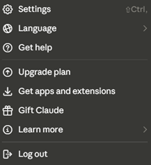
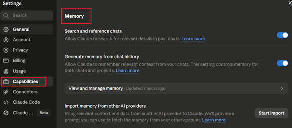
1. Search and reference chats (Αναζήτηση & αναφορά σε παλιές συνομιλίες)
Η συγκεκριμένη λειτουργία επιτρέπει στο Claude να ανατρέχει στο ιστορικό σας για να ανακτήσει σχετικές λεπτομέρειες όποτε αυτό κρίνεται απαραίτητο.
Πώς λειτουργεί
Το μοντέλο πραγματοποιεί στοχευμένη αναζήτηση στο παρελθόν. Η διαδικασία αυτή δεν εκτελείται αυτόματα, αλλά ενεργοποιείται κατόπιν δικής σας σχετικής εντολής (π.χ. «Σε παρακαλώ, υπενθύμισέ μου τι είχαμε αναφέρει για το συγκεκριμένο θέμα», «Θυμάσαι που είχαμε δημιουργήσει το Χ κείμενο…»).
Περιορισμός Εμβέλειας
Η αναζήτηση διεξάγεται είτε στο σύνολο των απλών συνομιλιών σας, είτε αυστηρά εντός ενός συγκεκριμένου Project. Το σύστημα δεν διασταυρώνει δεδομένα μεταξύ διαφορετικών Projects, διασφαλίζοντας την απόλυτη απομόνωση της πληροφορίας.
Απενεργοποίηση (Toggle Off)
Κλείνοντας τον διακόπτη, το Claude χάνει τη δυνατότητα πρόσβασης στο ιστορικό σας. Κάθε νέα συνομιλία εκκινεί ως ένας «λευκός καμβάς», χωρίς να αντλεί κανένα πλαίσιο (context) από προηγούμενες αλληλεπιδράσεις.
2. Generate memory from chat history (Δημιουργία μνήμης από το ιστορικό)
Αποτελεί την πιο νευραλγική λειτουργία εξατομίκευσης. Με αυτήν, το Claude μετατρέπεται σε έναν ψηφιακό συνεργάτη που χτίζει σταδιακά μια βαθιά κατανόηση του προφίλ σας.
- Το σύστημα δημιουργεί αυτόματα μια σύνοψη των βασικών στοιχείων από τις απλές συνομιλίες σας.
- Αποθηκεύει τον επαγγελματικό σας ρόλο, το επικοινωνιακό σας ύφος, τις τεχνικές σας προτιμήσεις (π.χ. δομή αναφορών), καθώς και καίριες λεπτομέρειες από την τρέχουσα εργασία σας.
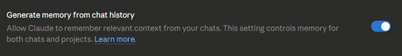
Επιλογές Απενεργοποίησης
Εάν επιλέξετε να κλείσετε τη λειτουργία, θα κληθείτε να επιλέξετε μεταξύ δύο καταστάσεων με ριζικά διαφορετικές συνέπειες:
Pause memory (Παύση)
Το μοντέλο διατηρεί την υπάρχουσα μνήμη ανέπαφη, αλλά δεν τη χρησιμοποιεί και δεν προσθέτει νέα δεδομένα. Οι ενδιάμεσες συζητήσεις δεν θα καταγραφούν όταν την επανενεργοποιήσετε.
Reset memory (Επαναφορά)
Διαγράφει οριστικά και αμετάκλητα όλες τις μνήμες, συμπεριλαμβανομένων αυτών των Projects. Σε περίπτωση επανενεργοποίησης, το σύστημα ξεκινά τη μάθηση από το μηδέν.
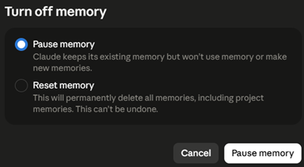
3. View and manage memory (Προβολή & διαχείριση μνήμης)
Πρόκειται για το κέντρο ελέγχου των αναμνήσεων. Η σχετική ένδειξη χρόνου (π.χ. Updated 7 hours ago) σας ενημερώνει για το πότε πραγματοποιήθηκε η τελευταία αυτόματη σύνθεση δεδομένων.
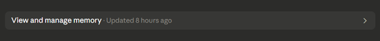
Διαχείριση: Επιλέγοντας αυτό το πεδίο, ανοίγει το αναδυόμενο παράθυρο «Manage memory», όπου μπορείτε να δείτε ακριβώς τι γνωρίζει το Claude για εσάς. Σας δίνεται η δυνατότητα να ζητήσετε την επεξεργασία της σύνοψης ή να προσθέσετε χειροκίνητα τις δικές σας προσαρμοσμένες οδηγίες, κάνοντας κλικ στο εικονίδιο του επεξεργαστή (μολύβι).
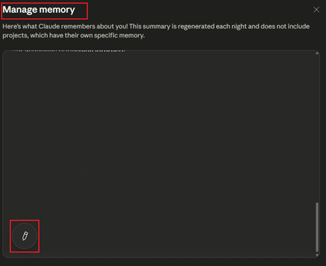
Σημαντική Λεπτομέρεια: Έχετε τη δυνατότητα να ενημερώσετε τη μνήμη απευθείας μέσα από οποιαδήποτε ενεργή συνομιλία. Αρκεί να δώσετε στο Claude την άμεση οδηγία να θυμάται ένα συγκεκριμένο στοιχείο. Η αλλαγή εφαρμόζεται ακαριαία στην επόμενη αλληλεπίδρασή σας, χωρίς να απαιτείται αναμονή για την ημερήσια ανανέωση του συστήματος.
4. Import memory from other AI providers (Εισαγωγή μνήμης από άλλα AI)
Μια καινοτόμος λειτουργία, η οποία σας επιτρέπει να μεταφέρετε το εξατομικευμένο γνωστικό υπόβαθρο (context) που έχετε ήδη αναπτύξει σε άλλες πλατφόρμες (όπως το ChatGPT). Κάνοντας κλικ στο «Start import», το σύστημα σας παρέχει ένα έτοιμο, διαμορφωμένο prompt. Εισάγοντας αυτό το κείμενο στον λογαριασμό σας στον έτερο πάροχο, μπορείτε να εξάγετε τη μνήμη σας και να την ενσωματώσετε απευθείας στο περιβάλλον του Claude, εξοικονομώντας πολύτιμο χρόνο εκπαίδευσης του μοντέλου.
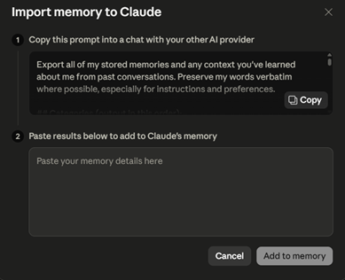
Αντιστοιχίστε τις 4 λειτουργίες της Μνήμης
Συμπληρώστε σε ποια λειτουργία της Μνήμης αντιστοιχεί κάθε περιγραφή:
«Θυμάσαι που είχαμε δημιουργήσει το Χ κείμενο;» — στοχευμένη αναζήτηση στο ιστορικό κατόπιν εντολής σας →
Αυτόματη σύνοψη του ρόλου, του ύφους και των προτιμήσεών σας από τις συνομιλίες →
Παράθυρο «Manage memory» με επεξεργασία της σύνοψης μέσω του εικονιδίου-μολυβιού →
«Start import» — μεταφορά context από άλλες πλατφόρμες όπως το ChatGPT →
Search past chats
Θα μπορείς να εντοπίζεις γρήγορα παλιές συνομιλίες, να αξιοποιείς ξανά prompts που λειτούργησαν και να ανατρέχεις σε προηγούμενο υλικό χωρίς αντιγραφή-επικόλληση.
Πρακτικό όφελος: ένα prompt που «δούλεψε» τέλεια πριν από εβδομάδες δεν χρειάζεται να ξαναγραφτεί από το μηδέν — ζητήστε από το Claude να το ανακαλέσει και συνεχίστε από εκεί που είχατε μείνει.
Πώς το αξιοποιείτε στην πράξη
Η δυνατότητα αυτή στηρίζεται στη λειτουργία «Search and reference chats» που γνωρίσατε στην υποενότητα 3.4. Θυμηθείτε τα βασικά της σημεία:
Ενεργοποιείται με δική σας εντολή
Η αναζήτηση στο παρελθόν δεν εκτελείται αυτόματα — τη ζητάτε εσείς μέσα στη συνομιλία.
Αυστηρή εμβέλεια
Η αναζήτηση γίνεται είτε στις απλές συνομιλίες σας είτε αυστηρά εντός ενός συγκεκριμένου Project — ποτέ διασταυρωμένα μεταξύ Projects.
«Σε παρακαλώ, υπενθύμισέ μου τι είχαμε αναφέρει για το συγκεκριμένο θέμα.»
«Θυμάσαι που είχαμε δημιουργήσει το Χ κείμενο; Θέλω να το χρησιμοποιήσουμε ως βάση.»
Σωστό ή Λάθος;
Σωστό ή Λάθος: Όταν το Claude αναζητά σε παλιές συνομιλίες, μπορεί να διασταυρώσει δεδομένα από διαφορετικά Projects μεταξύ τους.
Custom Styles — το δικό σου ύφος γραφής
Η δυνατότητα δημιουργίας «Custom Styles» (Προσαρμοσμένων Στυλ) αποτελεί ένα από τα σημαντικότερα εργαλεία εξατομίκευσης του Claude. Ουσιαστικά, σας επιτρέπει να ορίσετε με απόλυτη ακρίβεια τον τόνο, το λεξιλόγιο, τη μορφοποίηση και το επίπεδο λεπτομέρειας κάθε απάντησης. Αντί να προσπαθείτε να εξηγήσετε στο μοντέλο πώς ακριβώς θέλετε να γράψει μέσα σε κάθε νέο prompt, του διδάσκετε μία φορά το επιθυμητό ύφος και το εφαρμόζετε άμεσα, αλλάζοντάς το ακόμη και στη μέση μιας συνομιλίας, ανάλογα με το επικοινωνιακό σας πλαίσιο.
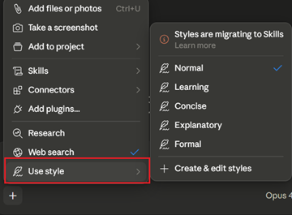
Τα Προκαθορισμένα (Preset) Styles του Claude
Πριν προχωρήσουμε στη δημιουργία ενός απόλυτα προσωποποιημένου ύφους, είναι σημαντικό να γνωρίζετε ότι η πλατφόρμα παρέχει ήδη ορισμένες έτοιμες επιλογές. Αυτά τα προκαθορισμένα styles αποτελούν ένα εξαιρετικό σημείο εκκίνησης για να εξοικειωθείτε με τη λειτουργία και να δείτε στην πράξη πώς η αλλαγή των ρυθμίσεων επηρεάζει δραστικά την τελική απάντηση.
Μέσα από το σχετικό μενού, μπορείτε να επιλέξετε ανάμεσα σε τέσσερις βασικές κατηγορίες.
Normal (Κανονικό): Αποτελεί την προεπιλεγμένη συμπεριφορά του μοντέλου, προσφέροντας έναν ισορροπημένο, φυσικό και ουδέτερο τόνο.
Concise (Συνοπτικό): Ιδανικό για περιπτώσεις όπου ο χρόνος είναι περιορισμένος. Το Claude αφαιρεί τις περιττές αναλύσεις και παραδίδει απαντήσεις άμεσες, σύντομες και απολύτως εστιασμένες στο ζητούμενο.
Formal (Επίσημο): Μετατρέπει το κείμενο σε αυστηρά επιμελημένο, δομημένο και επαγγελματικό. Είναι η βέλτιστη επιλογή για εταιρικές αναφορές, επίσημα email ή ακαδημαϊκά κείμενα.
Explanatory (Επεξηγηματικό): Λειτουργεί ως ένας υπομονετικός εκπαιδευτής. Όταν επιλέγετε αυτό το style, το μοντέλο αναλαμβάνει να αναλύσει πολύπλοκες έννοιες με απλό και διδακτικό τρόπο, καθιστώντας το ιδανικό για την εκμάθηση νέων γνωστικών αντικειμένων.
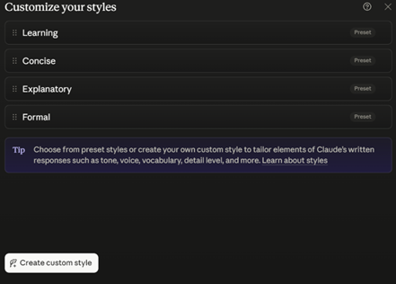
Δημιουργία Προσωπικού Style — δύο μέθοδοι
Η διαδικασία ξεκινά από το μενού «Use style» επιλέγοντας «Create custom style». Το σύστημα σας παρέχει δύο διαφορετικές προσεγγίσεις.
Μέθοδος 1η: Αυτή είναι η πιο αποδοτική λειτουργία για να διδάξετε στο Claude τη δική σας «φωνή».
- Επιλέγετε «Add Writing Example».
- Ανεβάζετε ένα αρχείο από τη συσκευή σας ή επικολλάτε απευθείας ένα κείμενο που έχετε γράψει εσείς.
- Το Claude αναλύει σε βάθος το δείγμα σας, μελετώντας το επίπεδο του λεξιλογίου, τη δομή των προτάσεων και τα αφηγηματικά σας στοιχεία και δημιουργεί ένα αυτοματοποιημένο προφίλ που μιμείται με ακρίβεια τον τρόπο που γράφετε.
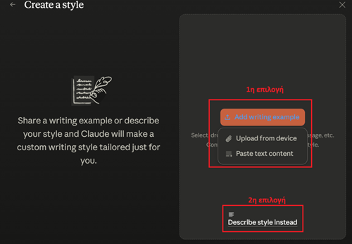
Εάν δεν διαθέτετε έτοιμο δείγμα κειμένου, επιλέγετε «Describe style instead». Εδώ, περιγράφετε λεκτικά και αναλυτικά τα χαρακτηριστικά του επιθυμητού ύφους (π.χ. «Θέλω ένα κείμενο άκρως επαγγελματικό, με χρήση παθητικής φωνής, κατάλληλο για ακαδημαϊκή δημοσίευση»).
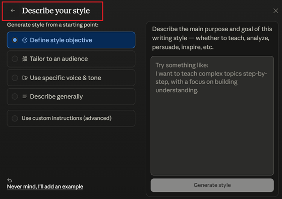
Εφαρμόστε το σε σενάριο
Έχετε ένα εξαιρετικό blog post που αντιπροσωπεύει πλήρως το ύφος σας και θέλετε το Claude να γράφει «σαν εσάς». Ποια μέθοδο δημιουργίας custom style θα επιλέξετε;
Πρακτικές Συμβουλές για Άριστα Αποτελέσματα
Μην προσπαθείτε να δημιουργήσετε ένα καθολικό style «για όλα». Αν δουλεύετε με διαφορετικά κοινά, δημιουργήστε διακριτά προφίλ. Φτιάξτε ένα style για εσωτερικές συνοπτικές σημειώσεις ομάδας και ένα διαφορετικό για αναλυτικά έγγραφα προς πελάτες, ώστε να εναλλάσσεστε μεταξύ τους σε δευτερόλεπτα.
Το κείμενο αναφοράς που θα ανεβάσετε πρέπει να σας αντιπροσωπεύει πλήρως. Επιλέξτε ένα εξαιρετικό blog post σας, μερικά καλογραμμένα emails ή ένα άρθρο με το οποίο είστε απόλυτα ικανοποιημένοι. Όσο πιο εστιασμένο είναι το δείγμα, τόσο πιο ακριβής θα είναι η ταύτιση του ύφους.
Δώστε στα styles σας ξεκάθαρους, περιγραφικούς τίτλους που δηλώνουν τον σκοπό τους (π.χ. SEO_Blog_Posts_Casual, Academic_Report_Formal). Αυτό διατηρεί τον χώρο εργασίας σας οργανωμένο και επιταχύνει τη ροή σας.
Σπάνια το πρώτο αποτέλεσμα είναι τέλειο. Το σύστημα σας επιτρέπει να επεξεργαστείτε εκ των υστέρων την περιγραφή του style. Μπορείτε να ζητήσετε από το Claude να το προσαρμόσει περαιτέρω δίνοντας εντολές όπως: «Κάνε το κείμενο λίγο λιγότερο επίσημο» ή «Αφαίρεσε την τάση του μοντέλου να χρησιμοποιεί συνεχώς αριθμημένες λίστες».
Incognito mode & διαχείριση ιδιωτικότητας
Κατά την επαγγελματική χρήση εργαλείων Τεχνητής Νοημοσύνης, ο έλεγχος των δεδομένων και η προστασία της εμπιστευτικότητας αποτελούν αδιαπραγμάτευτες προτεραιότητες. Η πλατφόρμα του Claude προσφέρει συγκεκριμένους μηχανισμούς για να ελέγχετε απόλυτα το ψηφιακό σας αποτύπωμα, με κυριότερο τη λειτουργία του Incognito.
1. Το Incognito Mode (Ανώνυμη Περιήγηση)
Η λειτουργία Incognito είναι διαθέσιμη δωρεάν σε όλους τους χρήστες (στα πλάνα Free, Pro και Max). Ενεργοποιείται αποκλειστικά κατά την έναρξη μιας νέας συνομιλίας, πριν στείλετε το πρώτο σας prompt, κάνοντας κλικ στο χαρακτηριστικό εικονίδιο του «φαντάσματος» (ghost icon).
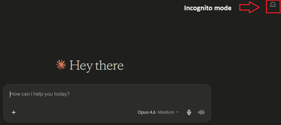
Τι ακριβώς διασφαλίζει
1. Καμία Αποθήκευση στο Ιστορικό
Η συνομιλία δεν εμφανίζεται ποτέ στην πλαϊνή μπάρα του λογαριασμού σας.
2. Καμία Εκπαίδευση Μοντέλου
Τα δεδομένα της συνεδρίας δεν χρησιμοποιούνται ποτέ για την εκπαίδευση των αλγορίθμων της Anthropic, ακόμη και αν έχετε γενικά ενεργοποιημένη τη ρύθμιση «Help Improve Claude».
3. Απομόνωση Μνήμης (Memory)
Οι συνομιλίες σε Incognito mode δεν τροφοδοτούν το σύστημα Μνήμης. Οτιδήποτε συζητηθεί παραμένει αυστηρά στη συγκεκριμένη συνεδρία και δεν πρόκειται να επηρεάσει το τι θα «θυμάται» το Claude για εσάς σε μελλοντικές συνομιλίες.
Στρατηγικά Σενάρια Χρήσης
Σκεφτείτε το Incognito ως ένα «ιδιωτικό παράθυρο». Είναι σχεδιασμένο για καταστάσεις όπου απαιτείται αυστηρή εμπιστευτικότητα ή μια απολύτως «καθαρή» αλληλεπίδραση, χωρίς κανένα προηγούμενο context. Ενδείκνυται για:
Τι ΔΕΝ προσφέρει το Incognito mode (Η διαφορά της Ανωνυμίας)
Το Incognito mode αφαιρεί τις συνομιλίες από την οθόνη σας και σας εξαιρεί από τα δεδομένα εκπαίδευσης, αλλά δεν σας καθιστά αόρατους στην εταιρεία (Anthropic). Οι συνομιλίες αυτές δεν διαγράφονται ακαριαία από τους διακομιστές. Αποθηκεύονται κρυπτογραφημένες στο παρασκήνιο για τουλάχιστον 30 ημέρες, αποκλειστικά για λόγους ασφαλείας, ελέγχου κακόβουλης χρήσης (Trust & Safety) και συμμόρφωσης με νομικές απαιτήσεις.
2. Διαχείριση και Οριστική Διαγραφή Ιστορικού
Η διαχείριση του ιστορικού των συνομιλιών σας (για τις συνεδρίες που πραγματοποιούνται εκτός της λειτουργίας Incognito) αποτελεί ένα κρίσιμο κομμάτι της καθημερινής οργάνωσης του ψηφιακού σας χώρου εργασίας. Το Claude σας παρέχει τον πλήρη και απόλυτο έλεγχο του προσωπικού σας αρχείου, επιτρέποντάς σας να διατηρείτε το περιβάλλον σας τακτοποιημένο, λειτουργικό και ασφαλές. Κάθε φορά που αλληλεπιδράτε με το μοντέλο σε κανονική λειτουργία, η συνομιλία αποθηκεύεται και καταχωρείται αυτόματα στην αριστερή πλευρική μπάρα (sidebar) της οθόνης σας.
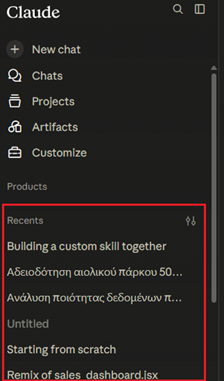
Πώς διαγράφετε μια συνομιλία
Εάν επιθυμείτε να αφαιρέσετε μια παλαιότερη ή παρωχημένη συζήτηση, είτε με σκοπό την εκκαθάριση του χώρου εργασίας από δοκιμαστικά prompts, είτε για την απομάκρυνση πληροφοριών που δεν σας είναι πλέον χρήσιμες, η διαδικασία είναι άμεση και στοχευμένη. Αρκεί να εντοπίσετε τον τίτλο της εκάστοτε συνομιλίας στο αριστερό μενού, να κάνετε κλικ στο εικονίδιο επιλογών με τις τρεις τελείες (...) που εμφανίζεται δίπλα στο όνομά της και να επιλέξετε την εντολή διαγραφής (Delete).
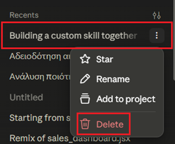
Είναι εξαιρετικά σημαντικό να θυμάστε ότι η συγκεκριμένη ενέργεια είναι οριστική και αυστηρά μη αναστρέψιμη. Από τη στιγμή που θα επιβεβαιώσετε τη διαγραφή, η συνομιλία διαγράφεται μόνιμα από το περιβάλλον διεπαφής σας και η πρόσβαση στα δεδομένα της συγκεκριμένης συνεδρίας χάνεται διά παντός.
Αξίζει, επίσης, να σημειωθεί ότι μέσα από το ίδιο ακριβώς αναδυόμενο μενού (...), σας δίνεται η δυνατότητα μετονομασίας (Rename) των συζητήσεων. Αυτή η λειτουργία είναι ιδιαίτερα χρήσιμη προκειμένου να κατηγοριοποιείτε με σαφήνεια τα θέματά σας, διευκολύνοντας έτσι τον άμεσο διαχωρισμό των σημαντικών αρχείων από εκείνα που προορίζονται για οριστική διαγραφή.
3. Η Πολιτική Δεδομένων της Anthropic (Τι διατηρείται και τι όχι)
Η πλήρης κατανόηση του τρόπου με τον οποίο η Anthropic διαχειρίζεται τα δεδομένα σας είναι θεμελιώδης, ειδικά όταν το εργαλείο αξιοποιείται σε αυστηρά επαγγελματικό επίπεδο. Για να χρησιμοποιείτε το Claude με απόλυτη ασφάλεια και εμπιστοσύνη, είναι κρίσιμο να γνωρίζετε τρεις βασικούς κανόνες.
Η εταιρεία δεσμεύεται ρητά από τους όρους χρήσης της ότι το ψηφιακό σας αποτύπωμα, το περιεχόμενο των συνομιλιών και τα μεταφορτωμένα αρχεία σας δεν παραχωρούνται ούτε πωλούνται σε τρίτους (π.χ. data brokers ή διαφημιστικές εταιρείες).
Στα επαγγελματικά και εταιρικά πλάνα (όπως το Team/Enterprise), τα δεδομένα σας εξαιρούνται εξ ορισμού από την εκπαίδευση των αλγορίθμων. Ωστόσο, στους απλούς λογαριασμούς (Free/Pro), το σύστημα ενδέχεται να αξιοποιήσει τις κανονικές συνομιλίες σας για τη βελτίωση του μοντέλου. Έχετε τη δυνατότητα να προστατεύσετε πλήρως την πνευματική σας ιδιοκτησία, επιλέγοντας την εξαίρεσή σας από αυτή τη διαδικασία. Αρκεί να μεταβείτε στις ρυθμίσεις του προφίλ σας και να απενεργοποιήσετε τον διακόπτη «Help Improve Claude».
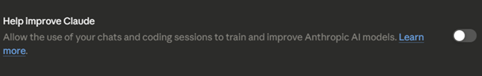
Όπως ισχύει και στη λειτουργία της Ανώνυμης Περιήγησης (Incognito), είναι ζωτικής σημασίας να γνωρίζετε ότι η οριστική διαγραφή μιας συνομιλίας από την οθόνη σας την αφαιρεί αποκλειστικά από το δικό σας οπτικό πεδίο. Στην πραγματικότητα, τα δεδομένα παραμένουν κρυπτογραφημένα στους κεντρικούς διακομιστές της Anthropic για ένα κυλιόμενο παράθυρο 30 ημερών. Αυτή η διατήρηση γίνεται αυστηρά και μόνο για λόγους ασφαλείας, ελέγχου πιθανής κακόβουλης χρήσης (Trust & Safety) και νομικής συμμόρφωσης, προτού τα δεδομένα καταστραφούν ολοσχερώς και οριστικά.
Εφαρμόστε το σε σενάριο
Χρησιμοποιείτε λογαριασμό Free/Pro με ευαίσθητα επαγγελματικά δεδομένα και θέλετε οι κανονικές συνομιλίες σας να εξαιρεθούν από την εκπαίδευση του μοντέλου. Τι κάνετε;
Ανακεφαλαίωση Ενότητας 3
- Το Project είναι ένας αυτόνομος, κλειστός χώρος εργασίας (workspace) με δικό του ιστορικό συνομιλιών και ιδιωτική «βάση γνώσης». Η ουσιαστική διαφορά από την απλή συνομιλία είναι η διάρκεια του πλαισίου: εφήμερο στο chat, μόνιμο στο Project.
- Αποφασίζετε αν χρειάζεστε Project με τις τρεις ερωτήσεις-φίλτρα: «Θα το ξαναπιάσω;», «Υπάρχει σταθερό υλικό αναφοράς;», «Θέλω συνέπεια;» — αν τουλάχιστον δύο απαντήσεις είναι «ναι», δημιουργήστε Project.
- Η δημιουργία γίνεται σε τρία βήματα: New Project (όνομα + περιγραφή → Create Project), εμπλουτισμός της Βάσης Γνώσης μέσω των Files και Set Instructions — οι οδηγίες που εφαρμόζονται σε κάθε νέο chat ως μόνιμο «αόρατο prompt».
- Έτοιμα blueprints: ο Social Media Manager «κλειδώνει» το Brand Voice (Style Guide, Buyer Personas, δομή Hook–σώμα–CTA–hashtags), ενώ ο Business Consultant αποκτά μόνιμο «Συνεργάτη Στρατηγικής» (οικονομικά δεδομένα, δομή Executive Summary).
- Η Μνήμη (Memory) μαθαίνει αυτόματα τις πάγιες προτιμήσεις σας. Ελέγχεται από Προφίλ → Settings → Memory, με 4 λειτουργίες: Search and reference chats, Generate memory (Pause = διατήρηση / Reset = οριστική διαγραφή), View and manage memory, Import memory από άλλα AI.
- Με το Search past chats εντοπίζετε γρήγορα παλιές συνομιλίες και επαναχρησιμοποιείτε prompts που λειτούργησαν, χωρίς αντιγραφή-επικόλληση.
- Τα Custom Styles ορίζουν τόνο, λεξιλόγιο και μορφοποίηση. Presets: Normal, Concise, Formal, Explanatory. Δημιουργία προσωπικού style με «Add Writing Example» ή «Describe style instead».
- Το Incognito mode (ghost icon, πριν από το πρώτο prompt) εξασφαλίζει: καμία αποθήκευση στο ιστορικό, καμία εκπαίδευση μοντέλου, απομόνωση Μνήμης — αλλά ΟΧΙ ακαριαία διαγραφή από τους διακομιστές (κρυπτογραφημένη διατήρηση για τουλάχιστον 30 ημέρες). Opt-out από την εκπαίδευση: απενεργοποίηση του «Help Improve Claude».
Συγχαρητήρια! Ολοκληρώσατε την Ενότητα 3. Μπορείτε να επιστρέψετε σε οποιαδήποτε διαφάνεια από το μενού περιεχομένων για επανάληψη.